Se siente mejor!
Track 01 · Abre el disco
0:00 / 1:07Abrir en untitled
Un minuto y siete segundos a volumen pleno de punta a punta. Los chicos piden rock and roll y Kuo se ofrece de encendedor.
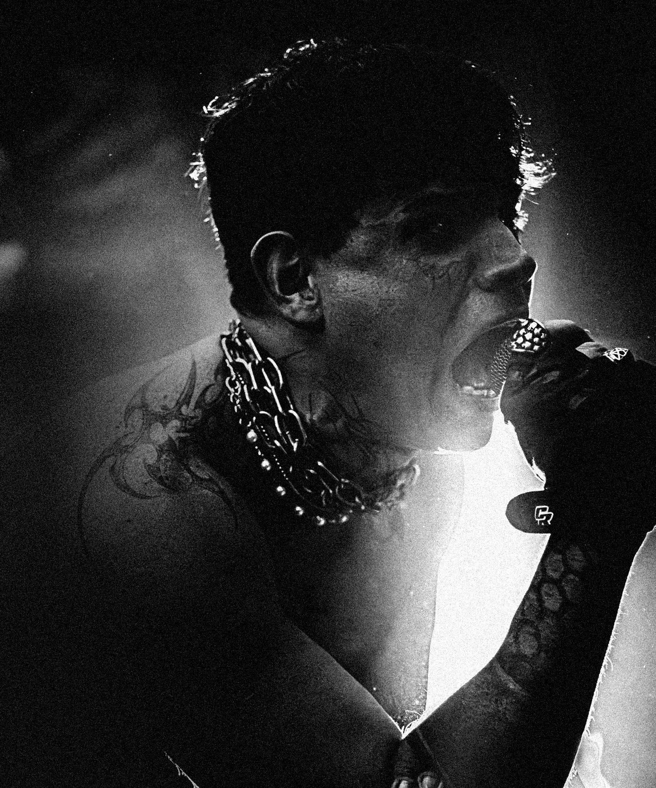
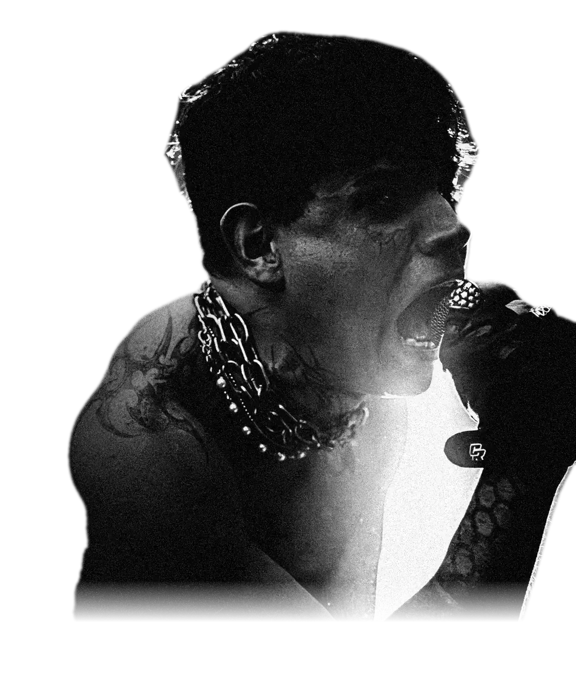
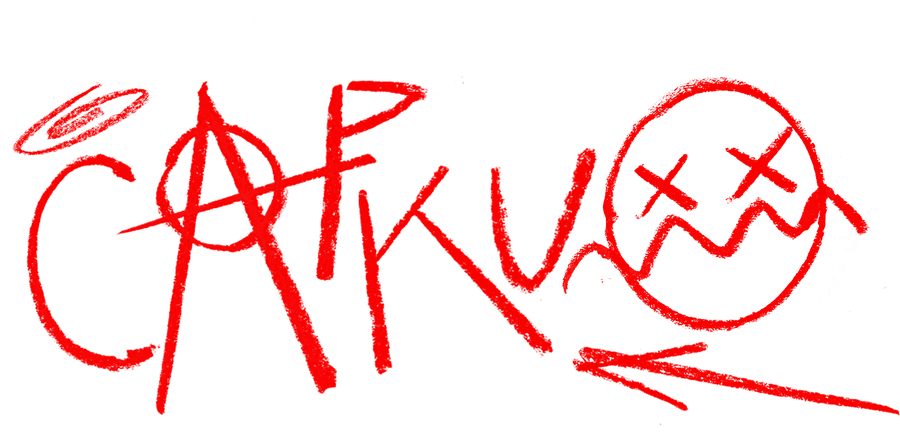
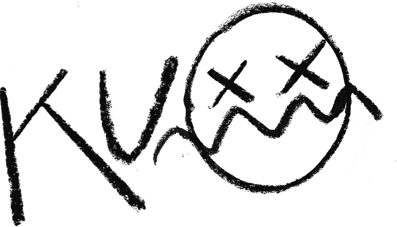
Y LOS PROBLEMASTÉCNICOSNUEVOHARDCORECUYANO!
Cap Kuo en formato banda. 30 minutos sin pausa, armados para el pogo. Mendoza, Argentina.
KUO! Y LOS PROBLEMAS TÉCNICOS es Cap Kuo en formato banda: dos guitarras, batería, segundas voces con screams y guturales, y pistas disparadas en vivo.
Son 30 minutos sin pausa, armados para el pogo. Canciones cortas, tempos altos y el público como parte del show desde el primer tema. El repertorio adelanta en vivo un disco nuevo que todavía no salió.
El último show fue el sábado 5 de septiembre de 2026 en The Bunker (Mendoza), abriendo para Marttein ante unas cien personas. El flyer de esa noche traía una sola indicación para el público: traer tapones.
«Si la economía está en el 2001, yo tranquilamente puedo estar en los 2000. Analógico pero eléctrico.»Cap Kuo, al anunciar el show
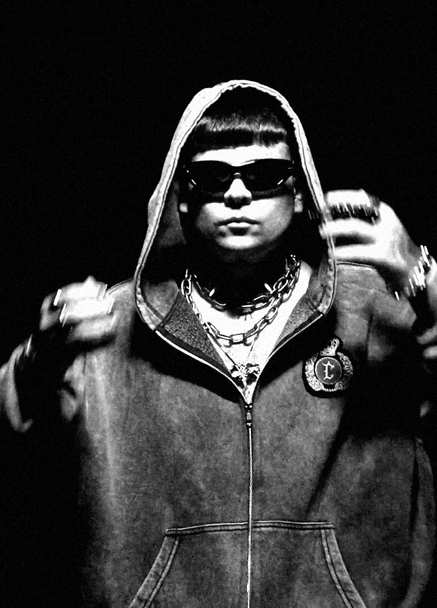
Fotos del último show
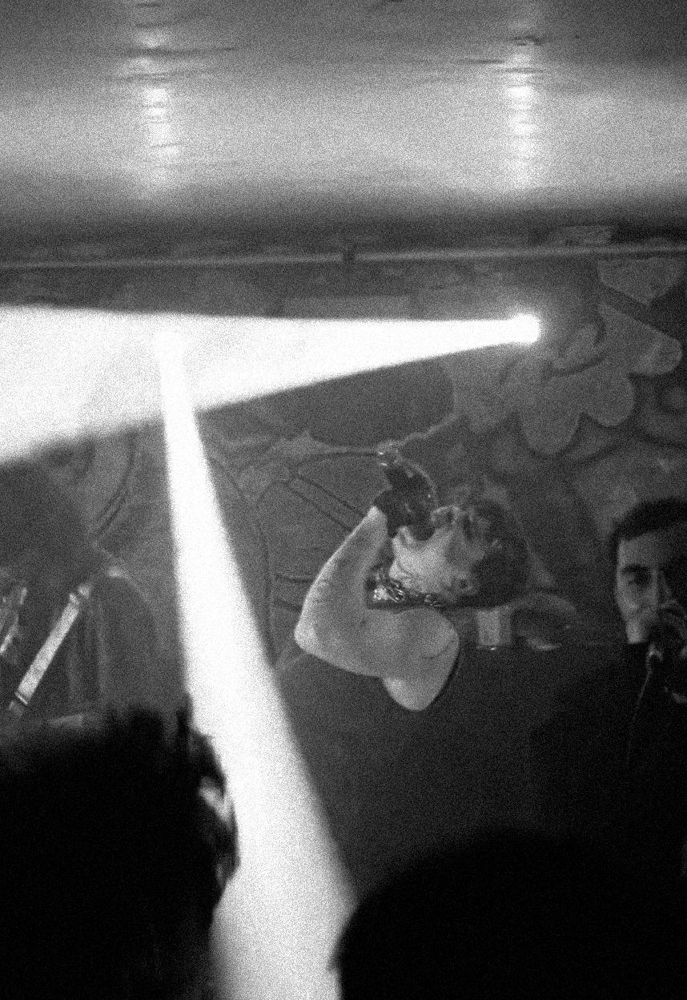
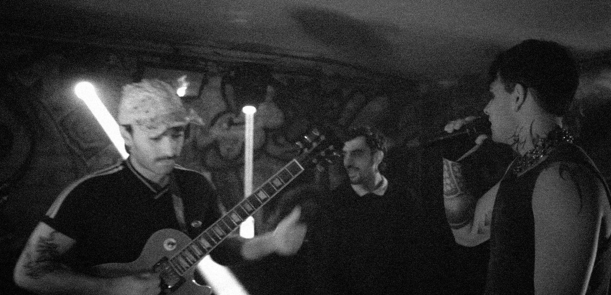
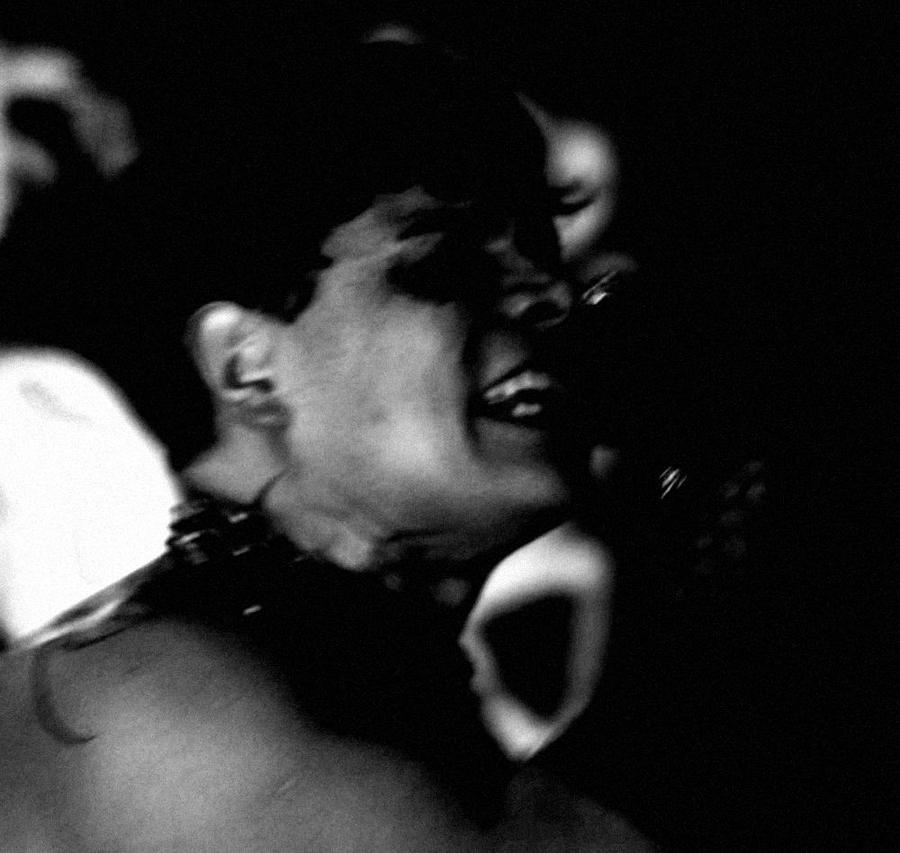
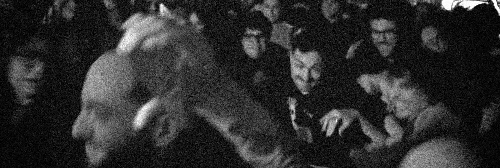
Primer adelanto de KUO! / 27!
Track 06 · 156 BPM · En YouTube
The Bunker
Mendoza
Sábado 05/09/2026
Handycam desde el pogo4 tomas
El nombre no se eligió: se impuso. Cada intento de armar el formato con banda chocó con un problema técnico distinto, hasta que el grupo quedó, en palabras de Kuo, «forzosamente autodenominado». El chiste se quedó y la banda también. El formato con banda debutó en septiembre de 2026 en The Bunker.
Título de trabajo · Inédito · Ya suena en vivo
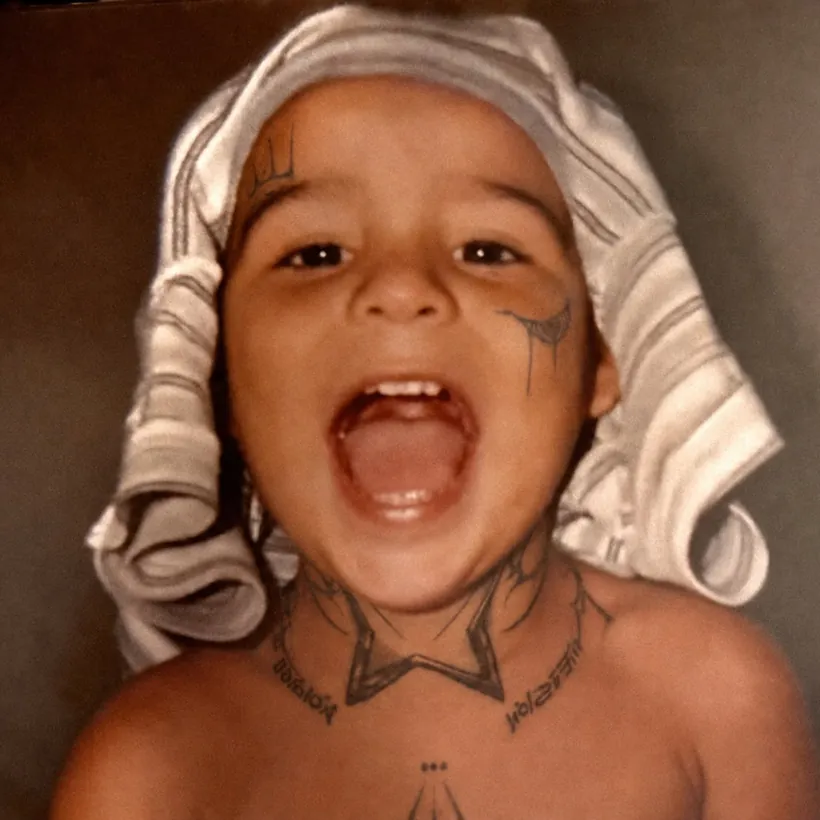
Dieciséis canciones en 39 minutos. La mitad dura menos de dos minutos y los tempos van de 100 a 158 BPM: entran, golpean y se van.
El disco tiene dos caras. La primera mitad es descarga pura: mezcla al rojo, subgraves pesados debajo de las guitarras y estribillos de pocas palabras, repetidos como cántico de cancha.
Desde MANEJANDORAPIDO! las canciones se estiran y dejan aire: arrancan contenidas y explotan recién pasada la mitad. No hay género que lo contenga: Kuo rompe y distorsiona todo lo que toca, y los graves pesados son parte de su firma.
Kuo escribe en primera persona y sin filtro. El arranque es provocación: él es «el encendedor» y el que no quiera escuchar «va a tener que irse».
Enseguida llega la bronca de HAGAMOSKILOMBO!: ni la iglesia ni el gobierno salvan a nadie, y el sueño americano quedó reducido a subirse al metro sin pagar.
Debajo del ruido hay autocrítica: autosabotaje, exceso y la decisión de no cambiar para caerle bien a nadie. Hacia el final el disco baja la guardia. Habla de aprender a fracasar, de la soledad, de morirse «un día normal», y cierra con una promesa simple: si hay problemas, me podés llamar.
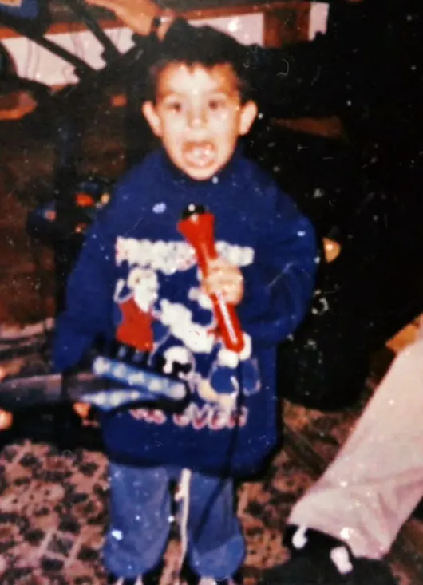
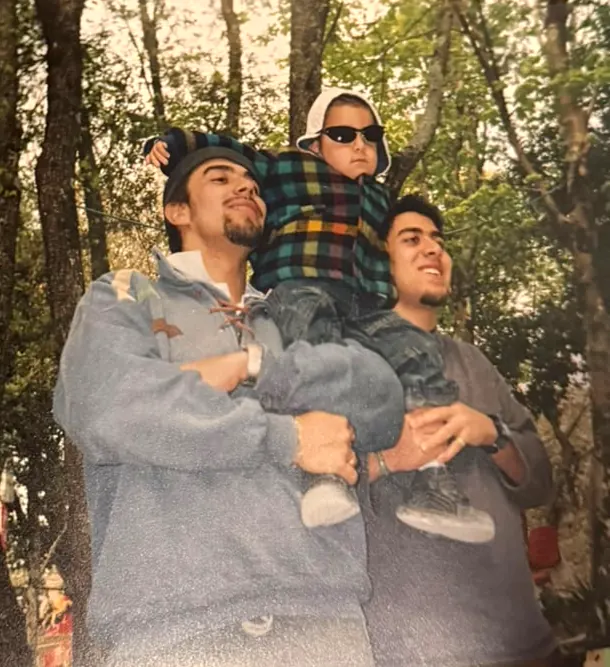
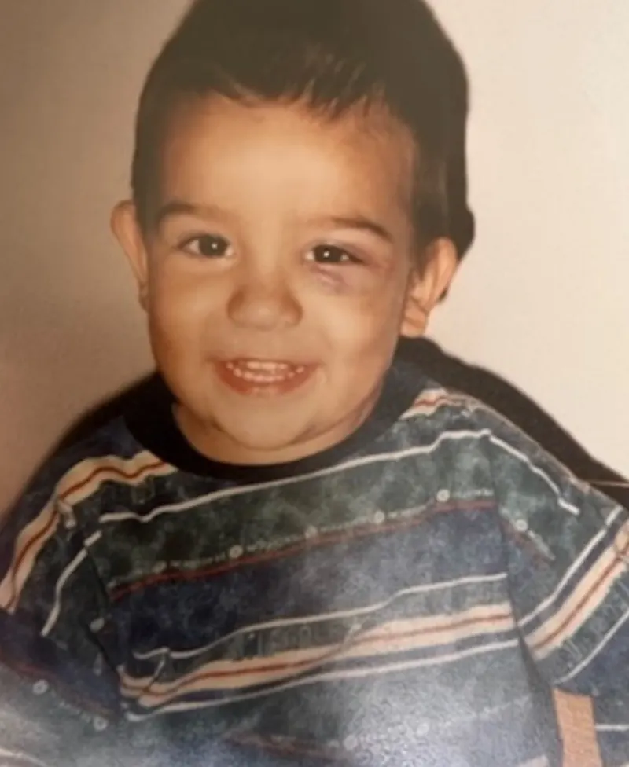
«Los chicos y las chicas están pidiendo rock and roll. Ellas quieren ver el fuego y yo soy el encendedor.»SE SIENTE MEJOR!
«A mí no me salvó la iglesia ni el gobierno. Algo tuvimos que hacer mal para llegar hasta acá.»HAGAMOSKILOMBO!
«Voy conmigo mismo, soy yo contra todo. También contra mí.»MANEJANDORAPIDO!
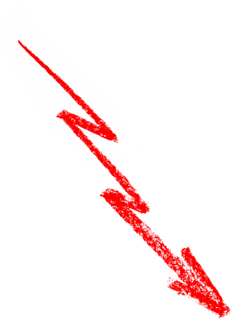
Cuatro canciones del disco para escuchar antes de cerrar una fecha. Dale play acá mismo.
Un minuto y siete segundos a volumen pleno de punta a punta. Los chicos piden rock and roll y Kuo se ofrece de encendedor.
Entra directo en el estribillo, el momento más alto del tema. La letra más política del disco, hecha para el pogo.
El más rápido de los cuatro. Arranca arriba, corta a mitad de camino y vuelve. Habla de dar vueltas en círculo y de no querer hablar.
Arranca abajo y a los pocos segundos sube a pleno. Habla de un vínculo que sabe que va a chocar y avanza igual.
Material inédito: no difundir. El resto del disco queda reservado hasta su salida.
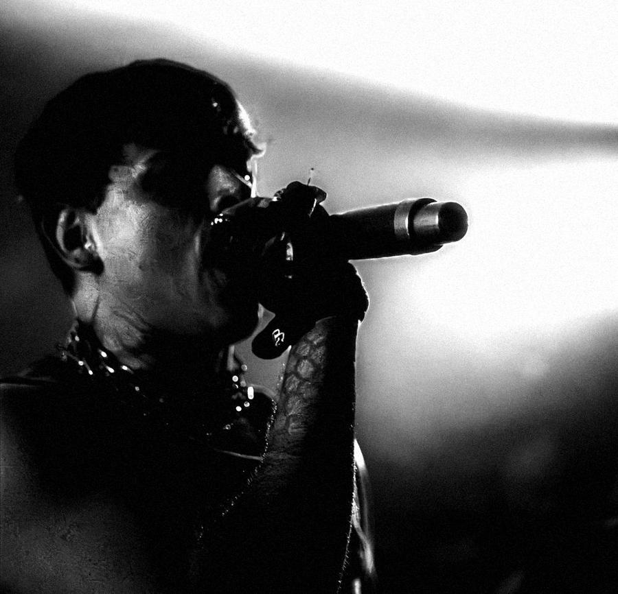
16 temas · solo se escuchan los adelantos
Tomás Segovia es Cap Kuo. Toca en bandas desde los 10 años y nunca dejó de buscar la suya.
Después de muchos intentos de armar grupo sin recursos ni experiencia, aprendió a hacerlo todo solo: de ahí salieron un dúo, un sello propio y un primer disco. Los graves pesados y la mezcla de géneros no son una etapa: son su forma de hacer música. Romper, distorsionar y no encasillarse en nada. El formato con banda no es un giro: es volver al lugar donde empezó.
Forma el dúo Cap Kuo y Kiky, con presentaciones en teatros y eventos de Mendoza.
Funda Honey Corp, sello y productora independiente desde donde impulsa a artistas locales.
Sale Sushi Mixtape, con gira anunciada por Mendoza, San Juan, San Luis y Buenos Aires.
Publica #LAVISIÓN, su primer disco: 15 canciones que cruzan trap, punk y rock.
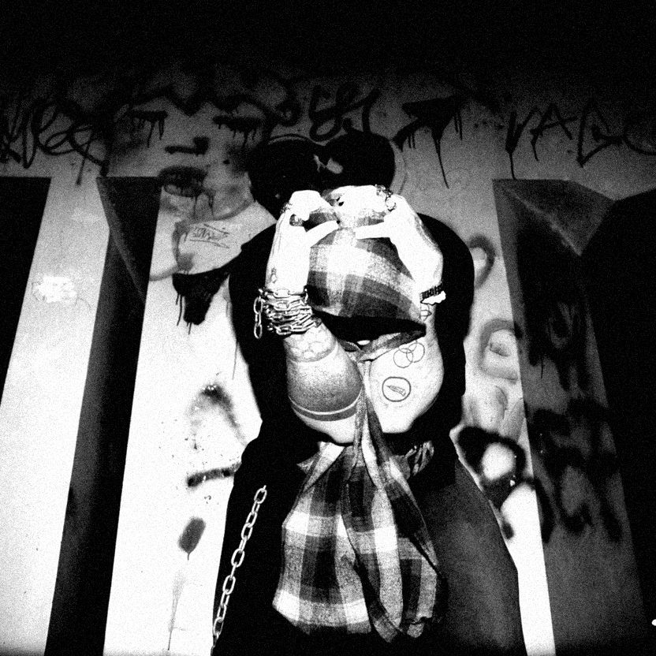
Además de su proyecto musical, Tomás dirige en Mendoza:
Conoce el show desde los dos lados del escenario.
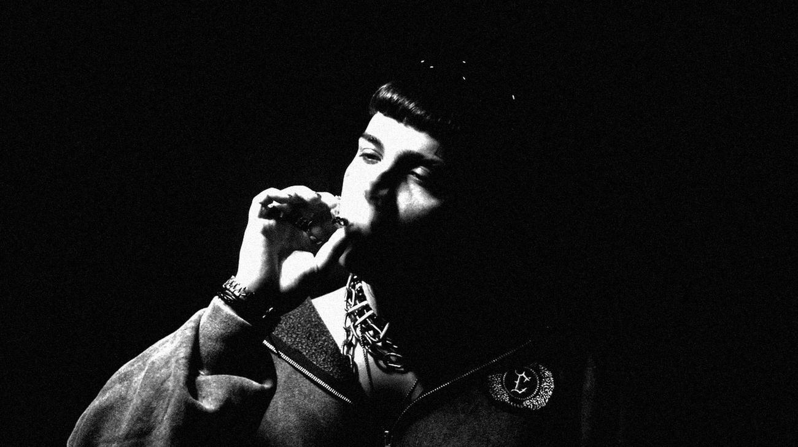
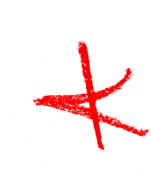
Banda + pistas desde Ableton Live. Trece canales, cuatro retornos y ningún amplificador en escenario.
Batería, guitarra eléctrica, voz principal y coro sobre pistas. Pistas, clic y guitarra salen de Ableton Live por una interfaz Universal Audio Apollo (2 entradas / 4 salidas) ubicada en escenario, que entrega 4 salidas de línea balanceadas a la consola.
La guitarra no usa amplificador: entra al Apollo y se procesa por software (simulación de amplificador) durante todo el show.
Vista desde el público hacia el escenario.
| CH | Fuente | Mic / conexión | Pie | Notas |
|---|---|---|---|---|
| 1 | Bombo | Dinámico de bombo (Beta 52 / D112 o similar) | Corto | Microfoneo de batería sugerido: ajustar al kit y a la sala. |
| 2 | Redoblante | SM57 o similar | Corto | |
| 3 | Hi-hat | Condensador lápiz | Corto | |
| 4 | Tom | Dinámico (SM57 / e604 o similar) | Clip | |
| 5 | Tom de piso | Dinámico (SM57 / e604 o similar) | Clip | |
| 6 | Overhead L | Condensador lápiz | Alto | |
| 7 | Overhead R | Condensador lápiz | Alto | |
| 8 | Voz principal | SM58 o similar | Boom | Centro, adelante |
| 9 | Coro | SM58 o similar | Boom | Al costado de la voz principal |
| 10 | Pistas L | Apollo · salida 1 (línea balanceada) | — | Mezcla principal de pistas → PA |
| 11 | Pistas R | Apollo · salida 2 (línea balanceada) | — | Mezcla principal de pistas → PA |
| 12 | Clic + referencia | Apollo · salida 3 (línea balanceada) | — | Solo retornos. Nunca al PA. |
| 13 | Guitarra procesada | Apollo · salida 4 (línea balanceada) | — | Mono → PA y retornos |
Cuatro mezclas independientes (envíos pre-fader). Todas se arman a partir del canal 12.
| Mezcla | Músico | Contenido | Prioridad |
|---|---|---|---|
| R1 | Batería | Canal 12 (clic + referencia) + a pedido en prueba de sonido | Crítico. El clic tiene que estar siempre presente y audible: sin clic no puede tocar en tiempo. |
| R2 | Guitarra | Canal 12 + guitarra (13) + a pedido | Necesita el clic para las entradas marcadas en la guía. |
| R3 | Voz principal | Canal 12 + su voz (8) | La referencia incluye una guía vocal de memoria (letra / arreglo). |
| R4 | Coro | Canal 12 + su voz (9) | Si no hay envíos suficientes, puede compartir mezcla con R3. |
Planta base; se adapta a lo que tenga la sala. Lo esencial es poco: rojo a contraluz, humo y apagón. Con eso el show se ve como tiene que verse.
| Equipo | Cantidad | Uso |
|---|---|---|
| Esenciales | ||
| PAR LED de contraluz | 4, en rojo | Base roja y siluetas |
| Máquina de humo | 1 | Haces y siluetas, todo el show |
| Consola de luces | Con apagón operable | Negro entre temas y cortes a silueta |
| No esenciales | ||
| PAR LED laterales | 2, en rojo | Suman al contraluz |
| Strobe | 2 | Cortes y estribillos |
| Frontal | 2 PAR, al mínimo | Ver la banda sin lavar al cantante |
Ante cualquier duda o cambio, contactar antes de la prueba de sonido.
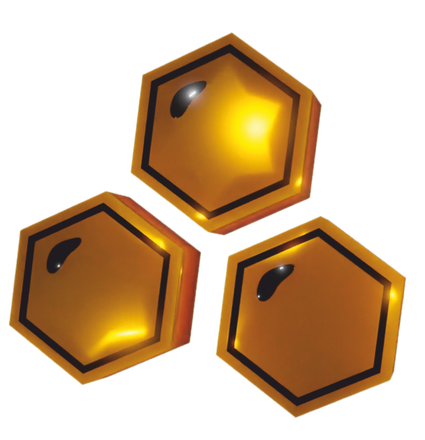
Honey CorpMaterial a pedido: fotos en alta. Fotos: archivo Cap Kuo.